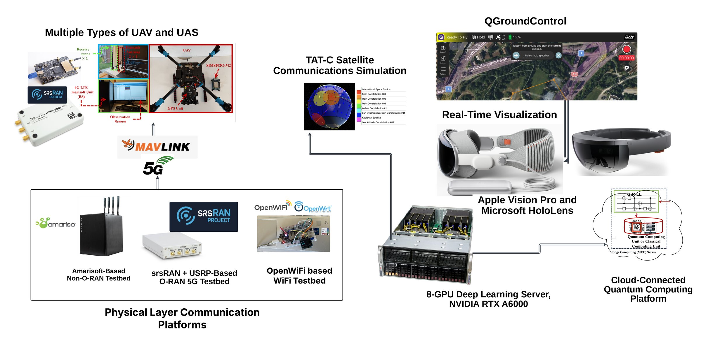

Full-stack testbeds for trustworthy autonomy
Assurance claims only matter if they hold on real hardware. We build and test on real flight controllers, real radios and real data, and every effort moves from simulation to a physical demonstration.
Our validation pipeline
Simulation & synthetic data
Software-in-the-loop flight and network simulation, with attack and fault injection at scale.
Hardware-in-the-loop
Real flight controllers and companion computers running against simulated environments.
Wireless testbed
Programmable radios and 5G infrastructure to test links under interference and attack.
Flight demonstration
Outdoor flight tests on our own UAS platform with onboard monitoring and data logging.
One connected environment


Hardware, testbeds and tools
UAS flight platforms
Various drone platforms, such as Holybro X500 and X650, instrumented for live flight experiments, anomaly injection and telemetry capture.
- Holybro X650 fleet with Pixhawk 6X/6C, M10 GPS and SiK telemetry
- Holybro X500 v2 PX4 development kit
- ModalAI VOXL 2 5G-enabled drones (Qualcomm QRB5165)
- Starling 2 Max GPS-denied development drone
5G / O-RAN testbed
End-to-end Open RAN testbed for real-world deployment testing, live anomaly injection and formal-guided fuzz testing.
- Full-stack O-RAN, Standalone and Non-Standalone 5G
- srsRAN + USRP based O-RAN nodes
- Amarisoft Callbox LTE/5G network
- E2 and O2 interfaces for runtime validation
Software-defined radio & RF
Flexible wireless integration and contested-spectrum experiments, including custom links coupled to PX4 drones.
- USRP software-defined radios, including B200
- BladeRF software-defined radios
- Spectrum analyzers and signal generators
- RF sniffers for protocol analysis
GPU & edge compute
High-performance compute for AI-driven formal verification, adversarial test generation and onboard inference.
- 8-GPU NVIDIA RTX A6000 deep learning server
- NVIDIA RTX A6000 workstations
- Jetson Orin Nano edge boards
- MEC edge cluster, with cloud access to quantum computing
Digital twin & visualization
Synchronized digital twin for telemetry replay, mission monitoring and immersive analysis of UAV and network behavior.
- QGroundControl mission and telemetry
- Digital twin telemetry replay
- Apple Vision Pro and Microsoft HoloLens
- TAT-C satellite communications simulation
OpenWiFi testbed
Programmable enterprise-grade access points for slice isolation, federated access and policy experiments.
- OpenWrt-based access points on TIP OpenWiFi
- Programmable SSIDs and VLANs
- CloudSDK controller integration
- Runtime monitors tied to formal policy models
Sensing & navigation
Navigation and mapping sensors for GPS-denied and beyond-visual-line-of-sight experiments.
- Velodyne HDL-32E 360° LiDAR
- Garmin GPS 18x LVC receivers
- Visual-inertial odometry payloads
Assurance toolchain
Software for formal verification, protocol hardening and adversarial testing of autonomy and wireless stacks.
- Z3 and CVC5 SMT solvers, symbolic execution
- PyMAVLink protocol hardening
- Damn Vulnerable Drone attack scenarios
- GAN-based fuzzing and causal analysis